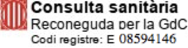

Col.legiada num 9196 | Registrada per la FEAP i la EFPA | Membre titular de l'ACPP i l'AETG |
 |
Xerrades i tallers per pares i educadors
Possibles temes a tractar:
Assessorament a cuidadors i professionals de l’ajuda
Espai de supervisió i suport a l’auto-cura.
Espai de suport davant l’emergència climàtica
Espai per compartir les emocions que genera la problemàtica del canvi climàtic (eco-ansietat) per poder-les elaborar i generar consciència i acció transformadora.
Contactar:C/Casanova 46, 4rt 1a, Barcelona.
Mb: 696453277
Email: trescoca@gmail.com Contactar:
Molins de Rei.
Mb: 696453277
Email: trescoca@gmail.com